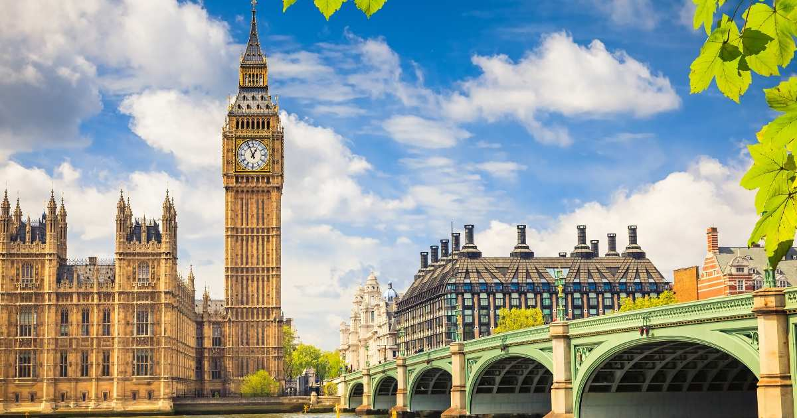
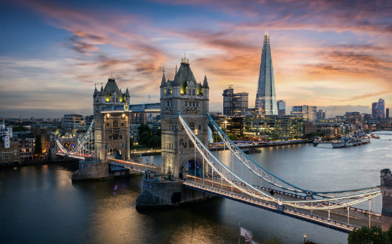
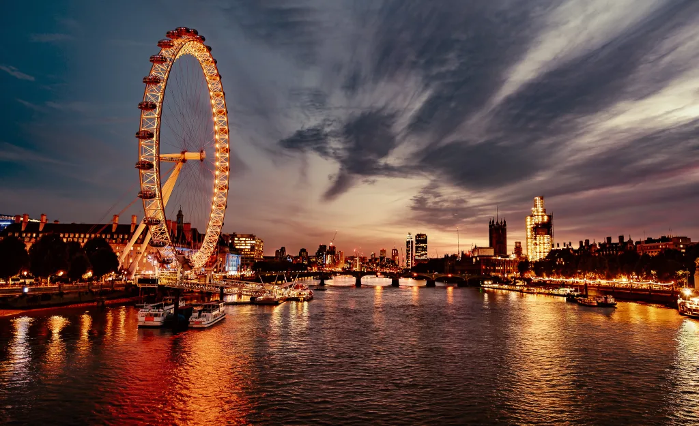
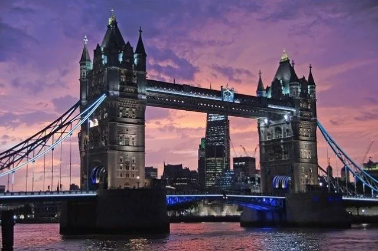
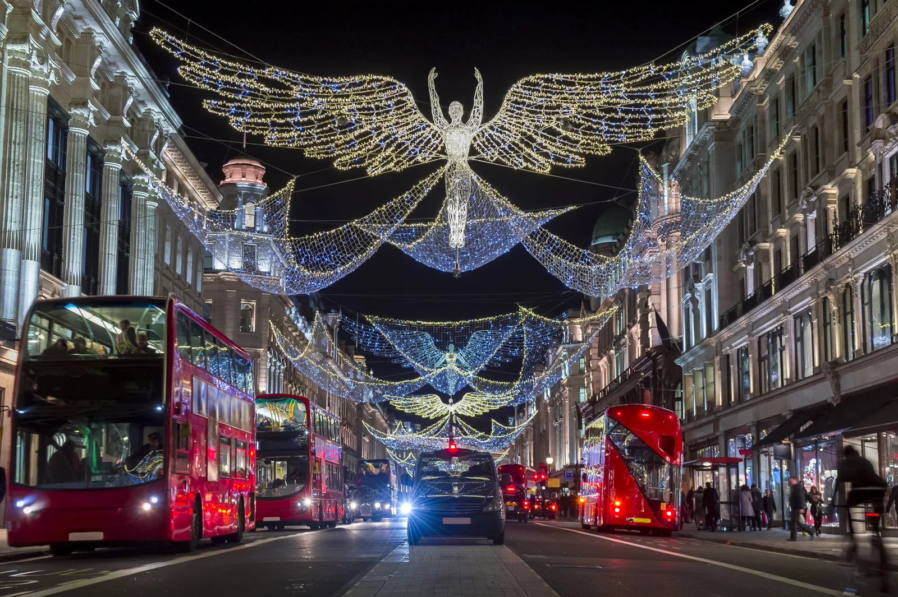

Londres
Capitale et plus grande ville d’Angleterre et du Royaume-Uni, située près de l’estuaire de la Tamise. Fondée par les Romains il y a presque 2 000 ans sous le nom de Londinium.

Une ville mondiale
La Cité de Londres, le noyau historique de la ville, ne mesure que 1,12 mile carré (2,9 km²) et conserve des frontières qui suivent de près ses limites médiévales. Londres est gouvernée par le maire de Londres et l’Assemblée de Londres.
C’est une immense métropole située à l’extrémité nord-ouest de la mégalopole européenne, dont elle constitue un maillon urbain et économique essentiel. Au-delà de l’Europe, Londres est une ville mondiale dont le paysage traduit la puissance.

Londres en images




Préparer son voyage
Au Royaume-Uni, on paie en livres sterling (£). Convertissez vos euros pour avoir une idée de votre budget sur place.